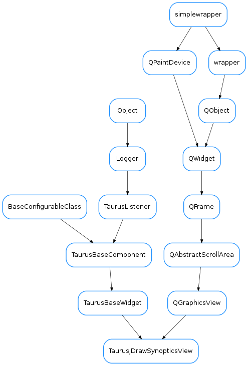

TaurusJDrawSynopticsView¶

-
class
TaurusJDrawSynopticsView(parent=None, designMode=False, updateMode=None, alias=None, resizable=True, panelClass=None)[source]¶ Bases:
PyQt4.QtGui.QGraphicsView,taurus.qt.qtgui.base.taurusbase.TaurusBaseWidgetTaurus Class that visualizes Synoptics drawn with the JDraw tool (by ESRF). It is equivalent to ATK Synoptic Player (Java).
After initialization call setModel(‘/your/file.jdw’) to parse the synoptic file and connect to controlled objects.
Arguments to TaurusJDrawSynopticsView() creator are:
- designMode; used by Qt Designer
- updateMode; controls Qt Viewport refresh (disabled by default)
- alias; a dictionary of name replacements to be applied on graphical objects
- resizable: whether to allow resizing or not
- panelClass: class object, class name or shell command to be shown when an object is clicked (None will show default panel, ‘’ or ‘noPanel’ will disable it)
TaurusJDrawSynopticsView and TaurusGraphicsScene signals/slots
External events:
Slot selectGraphicItem(const QString &) displays a selection mark around the TaurusGraphicsItem that matches the argument passed.
Mouse Left-button events:
Signal graphicItemSelected(QString) is triggered, passing the selected TaurusGraphicsItem.name() as argument.
Mouse Right-button events:
TaurusGraphicsItem.setContextMenu([(ActionName,ActionMethod(device_name))] allows to configure custom context menus for graphic items using a list of tuples. Empty tuples will insert separators in the menu.
-
classmethod
defaultPanelClass(klass)[source]¶ This method assigns the Class used to open new object panels on double-click (TaurusDevicePanel by default) If an string is used it can be either a Taurus class or an OS launcher
-
emitColors()[source]¶ emit signal which is used to refresh the tree and colors of icons depend of the current status in jdrawSynoptic
-
fitting(ADJUST_FRAME=False)[source]¶ Parent size is the size of the bigger panel (desn’t keep ratio) Rect size never changes (fixed by the graphics objects) Size and SizeHint move one around the other
the method works well until an object is clicked, then the whole reference changes and doesn’t work again.
-
graphicItemSelected¶
-
graphicSceneClicked¶
-
itemsChanged¶
-
model¶
-
modelsChanged¶
-
selectionStyle¶
-
setAlias(alias)[source]¶ Assigning a dictionary like {‘Tag’:’Value’} with tags to be replaced in object names while parsing.